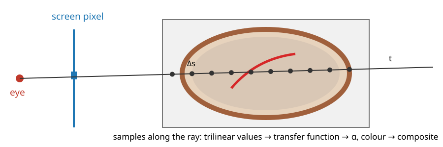

A CT scan, an MRI or a confocal stack is a volume: a 3D array of values. How do we turn it into one picture?
Rays through the volume, one per pixel, sampled in steps.
Projections along the ray: maximum (MIP), minimum (MinIP), average (an X-ray).
Direct volume rendering: a transfer function decides what to see; light is emitted and absorbed along the ray; compositing front to back.
Speed and artefacts: early termination, opacity correction, step size.
Isosurfaces two ways (ray casting vs a marching-cubes mesh), and polygons vs voxels.
Slides titled The math give the formulas and proofs; the ideas are complete without them.
Recall: a volume is an array plus a matrix
From 3D images (volumes3d, the marching-cubes day):
A volume stores values I[k, j, i] on a grid of voxels with spacing(\Delta x, \Delta y, \Delta z), often anisotropic (\Delta z > \Delta x).
A 4\times4voxel → world matrix A places it in physical space (the spacing on its diagonal, plus an origin and possibly a rotation); world → voxel is A^{-1}.
Values between voxels: trilinear interpolation. An oblique slice = inverse mapping + trilinear, and a first MIP was shown there.
Today the same inverse mapping is used at every sample of every ray. Our phantom: a synthetic head of 64\times64\times40 voxels of 1\times1\times1.6 mm (skull, brain, ventricles, a thin vessel tree, an air cavity).
One ray per pixel

For each pixel, a ray from the eye through the pixel (unit 1, run backwards: (PV)^{-1} applied to the pixel at near and far depth). Orthographic: parallel rays.
Clip the ray to the volume’s box, and sample it every \Delta s (in voxels), by trilinear interpolation.
What we do with the samples defines the image. The step \Delta s must be small enough not to miss thin structures (sampling, Fourier unit): about half a voxel.
Projections: maximum, minimum, average
MIP (maximum-intensity projection): the brightest sample on the ray. Thin bright structures (contrast-filled vessels, fluorescent spots) stand out against everything else; standard in angiography and fluorescence microscopy.
MinIP: the darkest sample within the body: air spaces (airways, sinuses).
Average (or sum): like an X-ray image. A radiograph measures the attenuation summed along the ray (the Beer–Lambert law, owned by the Radon elective); CT reconstructs the volume from many such projections.
All three lose depth: a vessel in front and one behind look the same. One reads them by rotating (a “spinning MIP”) or by combining with slices.
Try it: MIP, MinIP and average
Direct volume rendering: the transfer function
Instead of picking one sample, let every sample contribute: a semi-transparent, coloured cloud.
A transfer function maps the value of a sample to a colourc(v) and an opacity\alpha(v). This is where the user chooses what to see.
Opacity 0 for air and soft tissue, high for bone: the skull. Low opacity for soft tissue and high for vessels: a glass head with red vessels.
It is a classification by value only: structures with the same values (contrast-filled vessels and bone in CT) cannot be separated by it.
The editor in the demos: opacity as a piecewise linear function over the histogram of the volume, colours from a colour map (the colour day).
Light along a ray: emission and absorption
Picture each sample as a thin slab of glowing fog:
it emits light of its colour, in proportion to its opacity;
it absorbs part of the light coming from behind it.
What reaches the eye is the light of each slab, dimmed by everything in front of it. The fraction of light from depth t that survives to the eye is the transmittance\mathcal T(t): 1 at the eye, falling with every absorbing slab. An opaque wall makes \mathcal T = 0 behind it: nothing there is seen.
The absorption alone is the X-ray picture (Beer–Lambert); emission added makes it a rendering.
The math: the emission–absorption model
Along the ray, with t the distance from the eye, extinction \tau(t) (absorption per unit length) and colour c(t), the light L travelling towards the eye obeys a linear first-order ODE:
\frac{dL}{ds} = -\tau L + \tau c \qquad (s \text{ pointing towards the eye}).
Solving it (an integrating factor), with the transmittance\mathcal T(t) = \exp\!\big(-\int_0^t \tau(t')\,dt'\big):
L = \int_0^D \mathcal T(t)\,\tau(t)\,c(t)\,dt \;+\; \mathcal T(D)\,L_\text{background}.
Each point contributes its emission \tau c, attenuated by everything between it and the eye. With c = 0 only the background term is left: Beer–Lambert, L = L_\text{background}\,e^{-\int\tau}. For a constant slab of thickness D: L = c\,(1 - e^{-\tau D}) + background \cdot\,e^{-\tau D}.
From the integral to compositing
Cut the ray into steps of length \Delta s; sample i has colour c_i and opacity \alpha_i = 1 - e^{-\tau_i\Delta s}. Walk front to back, starting with C = 0 and \mathcal T = 1:
C \leftarrow C + \mathcal T\,\alpha_i\,c_i, \qquad \mathcal T \leftarrow \mathcal T\,(1 - \alpha_i).
Example, 5 samples with values 30, 80, 180, 230, 90 and opacities 0, 0.2, 0.5, 0.9, 0.2: \mathcal T goes 1 \to 1 \to 0.8 \to 0.4 \to 0.04 \to 0.032.
This is the “over” operator with premultiplied colours from the texture unit (How graphics cards store colour): each sample is drawn under what is in front.
Back to front (the painter’s order), C \leftarrow \alpha_i c_i + (1 - \alpha_i)\,C from the far end, gives the same final colour, but its partial sums differ, and it cannot stop early.
The math: compositing is the discretised integral
Replace the integral by a sum over the steps, with \tau and c constant within step i. The transmittance up to step i is a product, and the step’s own emission is \int_0^{\Delta s} e^{-\tau_i u}\tau_i c_i\,du = (1 - e^{-\tau_i\Delta s})\,c_i = \alpha_i c_i:
Front to back computes exactly this, keeping the running product \mathcal T_i. Back to front computes the nested form \alpha_1c_1 + (1-\alpha_1)\big(\alpha_2c_2 + (1-\alpha_2)(\dots)\big); expanding the brackets gives the same sum.
Try it: compositing one ray
Faster and correct: early termination, opacity correction, step size
Early ray termination: front to back, stop when \mathcal T < \varepsilon (say 0.05): what is behind can change the pixel by less than \varepsilon. Rays that hit bone stop at the skull. (In the demo, 345 of 1489 rays stop early and save 45 % of their samples; rays through empty space need empty-space skipping, not covered.)
Opacity correction: a transfer-function opacity is defined for a reference step. Halve the step and you take twice as many samples: with the same \alpha the image gets too opaque. Correct with \alpha' = 1 - (1 - \alpha)^{\Delta s/\Delta s_0}.
Step size: too large a step undersamples thin layers and gives wood-grain rings (aliasing: the Fourier unit). Rule: \Delta s \le half a voxel.
Pre- vs post-classification: interpolate the values and then apply the transfer function (post, sharper), or classify each voxel and interpolate colours (pre, blurrier).
The math: opacity correction
A step of length \Delta s through a material of extinction \tau lets through e^{-\tau\Delta s} of the light. If the table gives \alpha_0 = 1 - e^{-\tau\Delta s_0} for the reference step \Delta s_0, then
Example: \tau = 0.5 per voxel. One step \Delta s = 1: \alpha = 1 - e^{-0.5} = 0.393. Two steps of 0.5: each 1 - e^{-0.25} = 0.221, and together 1 - 0.779^2 = 0.393: the same. Without correction, two samples of 0.393 give 1 - 0.607^2 = 0.632.
With the correction, a homogeneous slab of thickness D has opacity 1 - e^{-\tau D} for every step size.
Try it: volume rendering
Isosurfaces two ways
The surface where the volume crosses a value c (the marching-cubes day):
Ray casting: march until a sample crosses c, refine the crossing by linear interpolation between the two samples (the same formula as marching squares), shade with the gradient as the normal (marching-cubes day). Done per pixel, per frame, on the GPU; gives a picture, no geometry.
Extract a mesh with marching cubes, then draw it with units 1–2. Done once per c; gives triangles to measure (area, volume), smooth, export or print.
ray casting
extracted mesh
work
every frame, every pixel
once per isovalue
needs
the volume on the GPU
only the mesh
gives
an image
geometry to measure
changing c
instant
re-extract
Polygons or voxels?
volume (voxels)
mesh (polygons)
represents
every point inside
only the surface
memory
512^3 voxels × 2 bytes = 256 MiB
10^6 triangles ≈ 24 MB
easy
segmentation, measuring volume and intensities, Boolean operations
rendering, measuring area, smoothing, deforming
rendering
ray casting (this unit)
rasterisation (units 1–2)
Microscopy and medical imaging produce volumes; meshes come from segmenting them (marching cubes) or from surface scanners. Most analysis stays on the voxels; meshes are for looking, measuring surfaces, and modelling.
Summary
A ray per pixel, sampled every \Delta s with trilinear interpolation.
MIP: vessels and spots; MinIP: air; average: an X-ray. No depth: rotate.
Transfer function: value → colour and opacity: what to see.
Emission–absorption: L = \int \mathcal T\,\tau\,c\,dt; discretised: C \leftarrow C + \mathcal T\alpha c, \mathcal T \leftarrow \mathcal T(1 - \alpha) (front to back = back to front).
Early termination (\mathcal T < \varepsilon), opacity correction1 - (1 - \alpha)^{\Delta s/\Delta s_0}, step ≤ half a voxel.
Isosurfaces by ray casting (a picture) or by marching cubes (a mesh to measure).